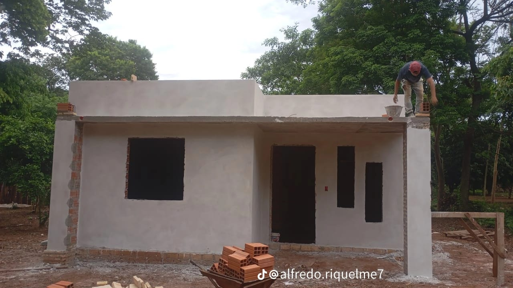
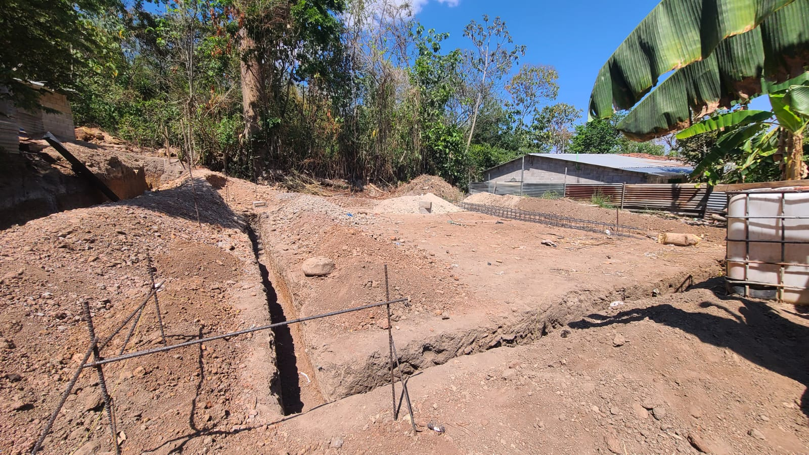
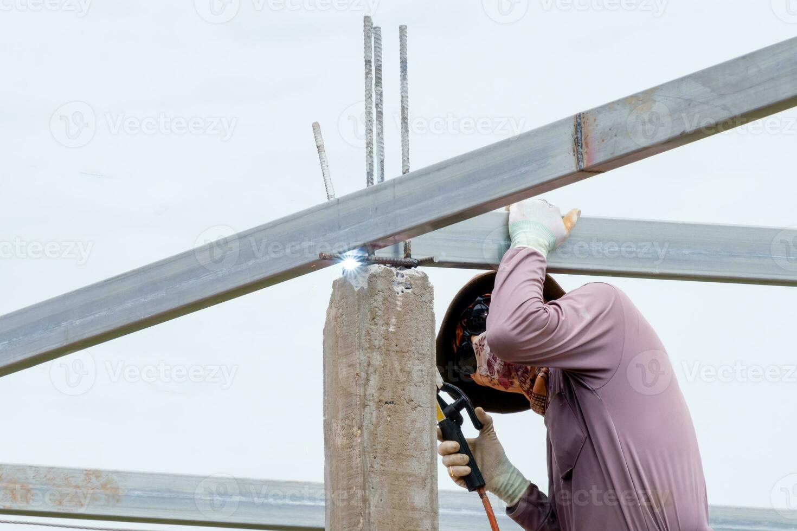

Construccion general
Levantamiento de viviendas, ampliaciones, muros, divisiones y ejecucion de obra con procesos ordenados desde la base hasta la entrega.

Desarrollamos proyectos residenciales y de mejora con enfoque practico: construccion desde cero, ampliaciones, instalacion de ceramica, soldadura estructural y trabajos de obra gris con mano de obra responsable.

Levantamiento de viviendas, ampliaciones, muros, divisiones y ejecucion de obra con procesos ordenados desde la base hasta la entrega.

Cimientos, columnas, vigas, losas, bloques y estructura principal para dejar tu proyecto listo para la siguiente etapa de acabados.

Colocacion de pisos, paredes, banos, cocinas y patios con nivelacion precisa, cortes limpios y terminacion profesional.

Escaleras, techos, refuerzos, portones, bases y estructuras para segunda planta fabricadas con seguridad y resistencia.

Transformamos espacios ya construidos con mejoras funcionales, renovacion de superficies y optimizacion visual del ambiente.

Detalle final de juntas, remates, nivelacion y correcciones para que cada area quede limpia, uniforme y lista para uso.
Coordinamos visitas, evaluacion y cotizacion de acuerdo al tipo de servicio que necesites. Si tu proyecto esta en desarrollo, te orientamos sobre la mejor secuencia de trabajo.